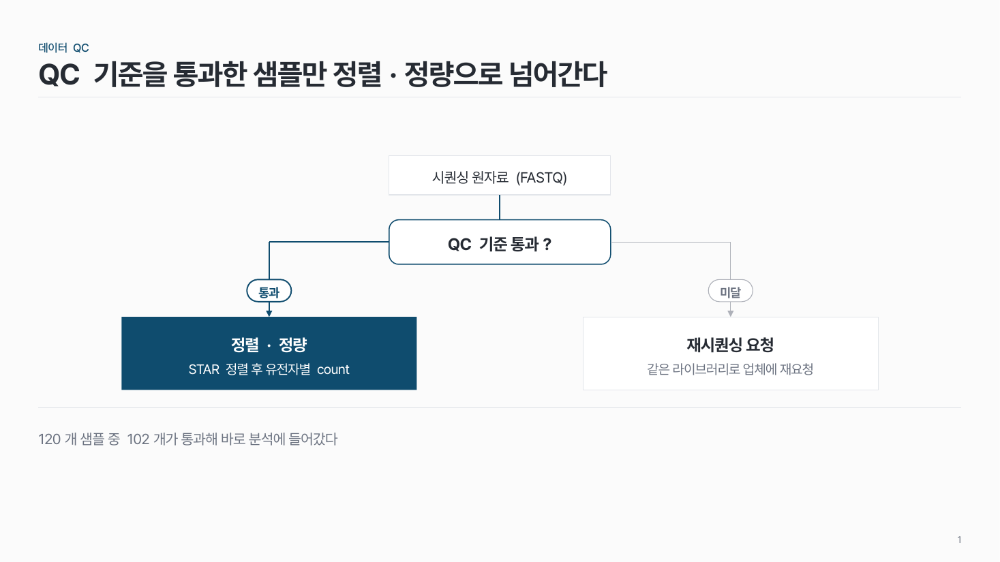
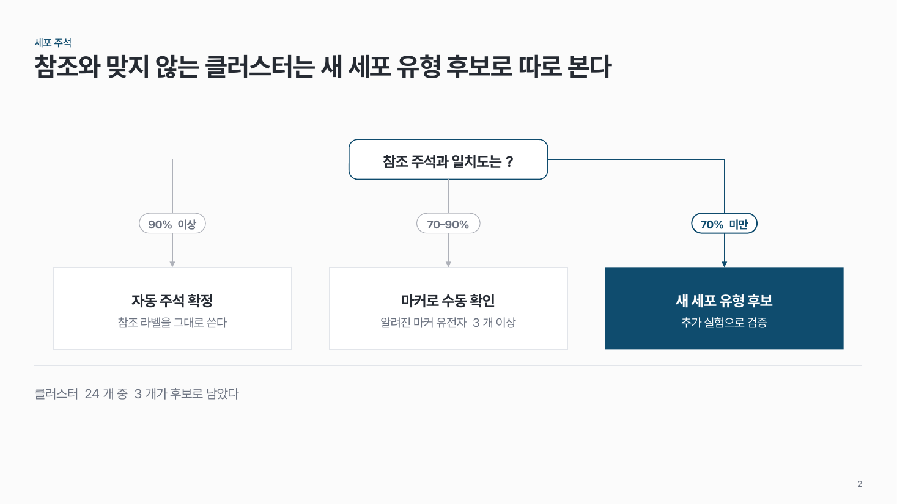
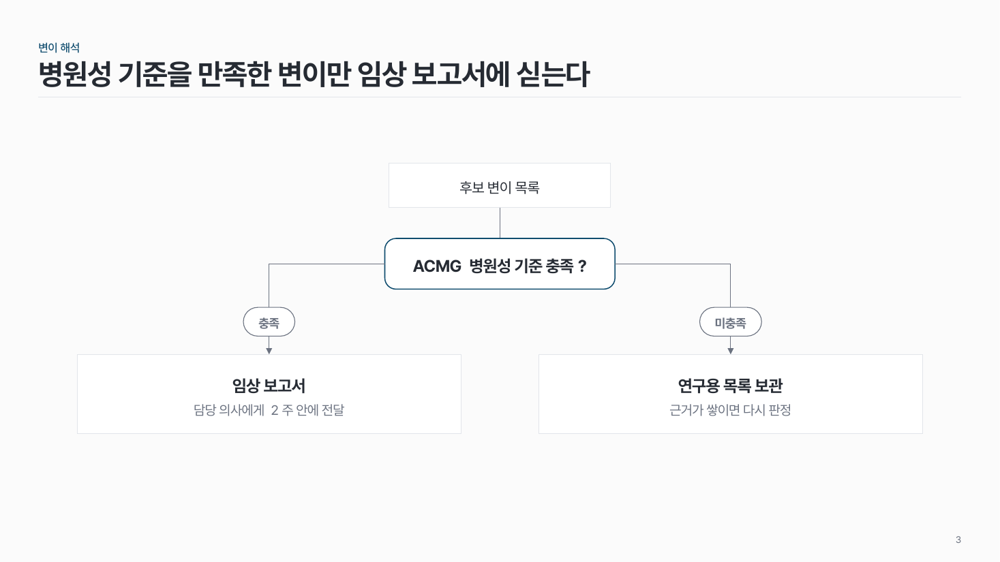

분기 흐름 flow-05
판단 지점 하나에서 조건에 따라 2–3갈래로 나뉘는 과정. 핵심 경로 하나만 진하게.

이 시안
2갈래 · 시작 칸 · 핵심 경로(통과) 강조 · 결론 줄
슬라이드 제목: QC 기준을 통과한 샘플만 정렬·정량으로 넘어간다
언제 쓰나
조건에 따라 이후 경로가 달라지는 과정을 보여 줄 때요. QC 통과/미달, 주석 일치도에 따른 처리, 기준 충족 여부처럼 판단 하나가 메시지예요.
구성
- 맨 위에 판단 전 단계(선택).
- 그 아래 판단 칸: 질문 한 줄 ("QC 기준 통과?").
- 갈래 2–3개: 선 위에 조건 라벨, 끝에 결과 칸 (이름 + 한 줄).
- 핵심 경로 하나만 진한 색과 굵은 선.
지킬 것
- 판단 지점은 한 장에 하나.
- 갈래는 2–3개. 판단 칸 15자, 조건 라벨 6자 이내.
- 화살표는 갈래마다 하나.
하지 말 것
- 갈래 끝에 판단 칸을 또 붙여 나무를 키우지 않아요. 그러면 장을 나눠요.
- 선이 서로 엇갈리게 놓지 않아요.
- 모든 갈래를 같은 진하기로 칠하지 않아요.
시안 비교
같은 내용을 옵션만 바꿔 그렸어요. 그림을 누르면 크게 보여요.
A2갈래 · 시작 칸 · 핵심 경로(통과) 강조 · 결론 줄
슬라이드 제목: QC 기준을 통과한 샘플만 정렬·정량으로 넘어간다

B3갈래 · 시작 칸 없음 · 가운데가 아닌 갈래 강조
슬라이드 제목: 참조와 맞지 않는 클러스터는 새 세포 유형 후보로 따로 본다

C2갈래 · 강조 없음 · 결론 줄 없음
슬라이드 제목: 병원성 기준을 만족한 변이만 임상 보고서에 싣는다